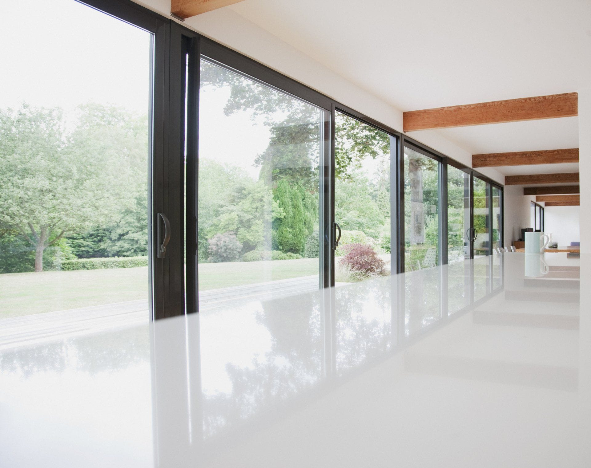
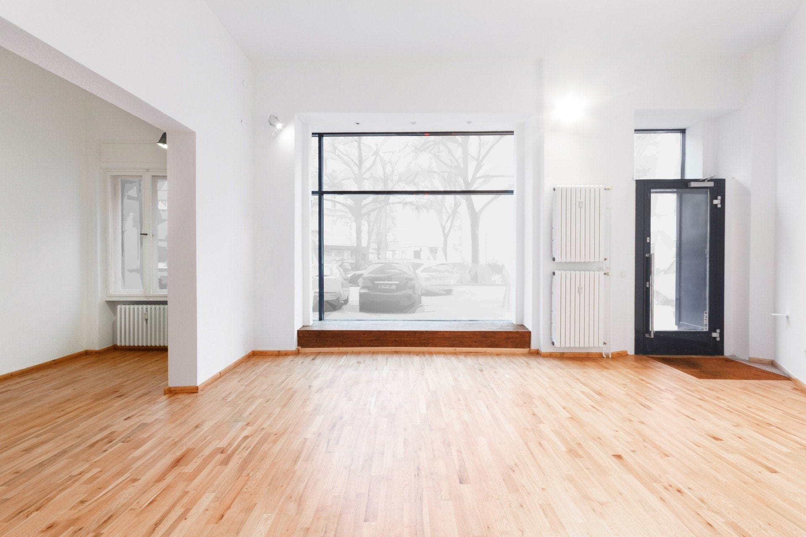
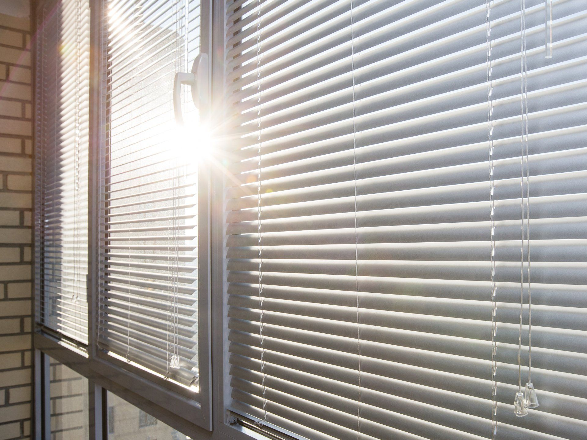

Vous souhaitez faire remplacer les menuiseries de votre habitat ? Vous êtes à la recherche de solutions durables ? Notre équipe de professionnels vous propose un large choix de menuiseries intérieures.
Afin d'apporter de la luminosité et d'améliorer le confort thermique et acoustique de votre logement, TECHNI FERMETURES remplace toutes vos fenêtres.
Notre entreprise spécialisée dans les travaux de menuiserie met à votre service son savoir-faire pour vous guider dans le choix de vos fenêtres, portes-fenêtres et baies-vitrées.
Les nombreuses possibilités de personnalisation vous permettent d'apporter le style que vous souhaitez à votre façade. Vous pouvez ainsi opter pour des fenêtres en PVC ou des fenêtres en aluminium, à ouverture oscillo-battante, coulissante ou à la française.
Pour une meilleure isolation phonique et thermique, nos fenêtres sont également disponibles avec double ou triple vitrage.
Découvrir nos fenêtres

Améliorez votre confort grâce à la pose et à l'installation de volets roulants et de stores intérieurs par notre équipe de menuisiers professionnels.
Envie de changer de volets et de vous laisser tenter par le confort des volets roulants ? Vous avez besoin d'astuces pour occulter la lumière ? Avec TECHNI FERMETURES, notre entreprise de menuiserie intérieure, vous pouvez bénéficier de toute une gamme de volets roulants sur mesure et de stores manuels ou motorisés.
Notre équipe de professionnels vous propose un large choix de modèles de volets en PVC, de volets en aluminium et de volets en bois pour sécuriser et isoler votre habitat.
Nos stores intérieurs sont également de véritables partenaires pour préserver votre intimité.
Je veux changer mes storesExperte dans la pose de menuiserie intérieure, notre entreprise dispose d'une large gamme de portes d'entrée s'adaptant parfaitement à toutes les envies.
Vous souhaitez changer votre porte d'entrée ? Ce type de menuiserie intérieure est sans aucun doute la fermeture la plus importante de votre habitation.
Ainsi, TECHNI FERMETURES, votre entreprise de menuiserie intérieure située à Mulhouse, est à votre service pour l'installation et la pose de votre porte d'entrée. Que ce soit pour un projet neuf ou de rénovation, nous vous proposons un large choix de modèles de portes d'entrée standard ou sur mesure.
Nous vous proposons une grande variété de matériaux, de styles, de formes et de coloris pour votre porte d'entrée.
Voir nos portes d'entréeNous assurons un accompagnement personnalisé du début à la fin de votre projet.